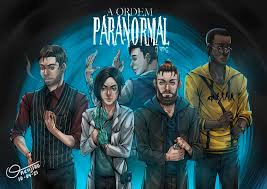
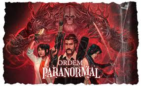

Ordem Paranormal
A Ordo realitas é uma organisação que defendo o mundo real do mundo sobrenatural e exitem especialistas para priteger o nosso mundo do outro lado
- O QUE É O OUTO LADO ?
- O QUE SÃO OS MARCADOS PELO O OUTRO LADO ?
- O QUE SÃO AS MASCARAS DOS ELEMNTOS ?
- O QUE SÃO OS ELEMENTOS ?
O que é o outro lado ?
O outro lado e onde o sobrenatural reside e o paranormal e também onde esta a personificação de cad mascara e de cada elemento.
O que são os marcados ?
Os marcados são pessoas que foram escolhidas pelo o outro lado para erem portadores ddas reliquias do cãos, pois eles são os unicos que podem suportar o poer que as reliquias liberam os conequitando com o paranormal.
o que são as mascaras ?
As mascaras são como condutoras do elementos do outro lado e essas mascaras so dão poderes aos marcados e quais são as mascaras:
- Conechimento- mascara do desespero esse portador é chamado de MAGISTRADO
- sangue- mascara do diabo esse portador é chamado de DIABO
i>energia- marcara do caõs esse portador é chamado de ANFITRIÃO
- morte- marcara da morte esse potaroder não tem nome
O que são os elementos ?
Os elementos são o principio do paranormal que podem ser conjurados para o noso mundo traves de rituais que egigem uma troca equivalente ao nuvel do ritual que sera utilizado, e os elementos são dividios em 4;
- CONHECIMENTO
- MORTE
- ENERGIA
- SANGUE

